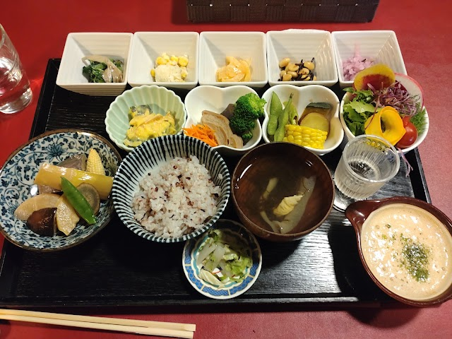
| 営業時間 | 木・金・土・日 11:30〜14:00 |
|---|---|
| 定休日 | 月・火・水曜 |
| 住所 | 栃木県小山市高椅１９５５ |
| 予約 | 可 — ☎ 0285-49-3545 ／ 公式サイト |
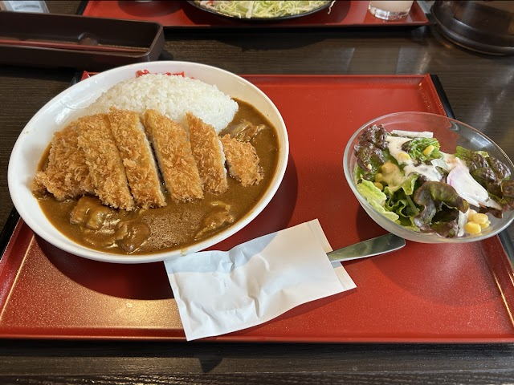
| 営業時間 | 月・火・水・木・金・土・日 11:00〜20:00 |
|---|---|
| 定休日 | なし(要最終確認) |
| 住所 | 栃木県小山市下国府塚25ｰ1 |
| 予約 | 要確認 — ☎ 0285-39-7114 ／ 公式サイト |
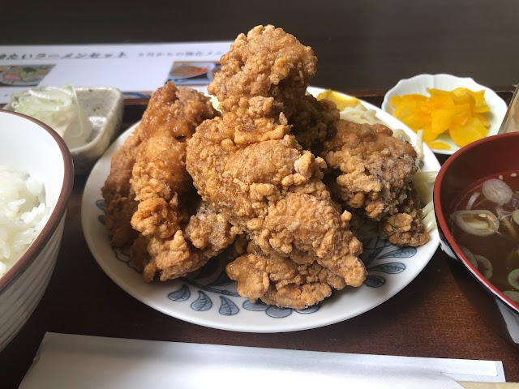
| 営業時間 | 火・水・木 11:00〜14:00, 17:30〜20:30 ／ 金・土 10:00〜14:00, 17:30〜20:30 |
|---|---|
| 定休日 | 月・日曜 |
| 住所 | 栃木県小山市南小林１４４−５ |
| 予約 | 要確認 — ☎ 0285-36-4285 ／ 公式サイト |
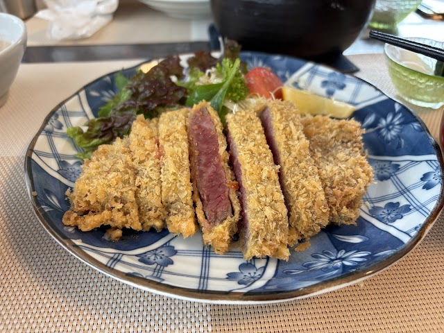
| 営業時間 | 月・火・木・金・土 11:30〜14:30, 17:30〜22:00 ／ 日 11:30〜14:30, 17:30〜21:00 |
|---|---|
| 定休日 | 水曜 |
| 住所 | 栃木県小山市塚崎１５０７−３ |
| 予約 | 可 — ☎ 0285-39-7976 ／ 公式サイト |
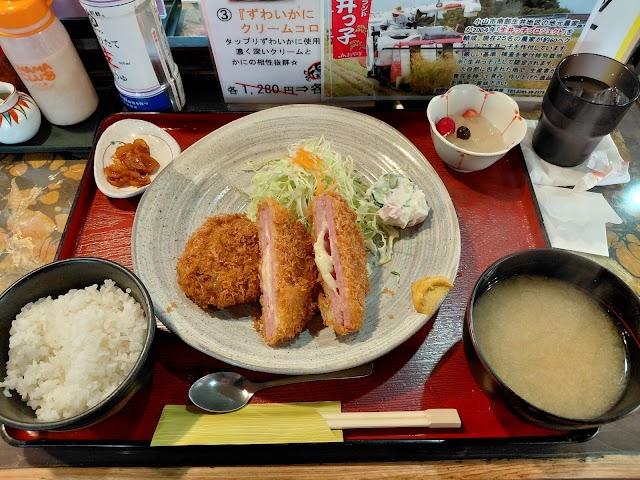
| 営業時間 | 月・火・金・土・日 11:00〜14:00, 17:30〜20:00 ／ 水・木 11:00〜14:00 |
|---|---|
| 定休日 | なし(要最終確認) |
| 住所 | 栃木県小山市東城南１丁目２８−１１ |
| 予約 | 要確認 — ☎ 0285-31-3711 ／ 公式サイト |
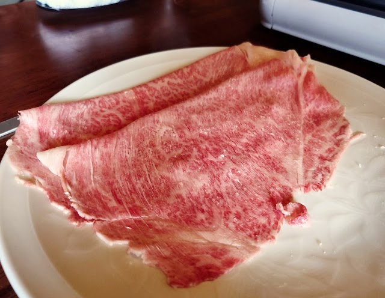
| 営業時間 | 月・火・水・木・金・土・日 11:30〜14:30, 17:00〜22:00 |
|---|---|
| 定休日 | なし(要最終確認) |
| 住所 | 栃木県小山市喜沢１２３２ |
| 予約 | 可 — ☎ 0285-24-1129 ／ 公式サイト |
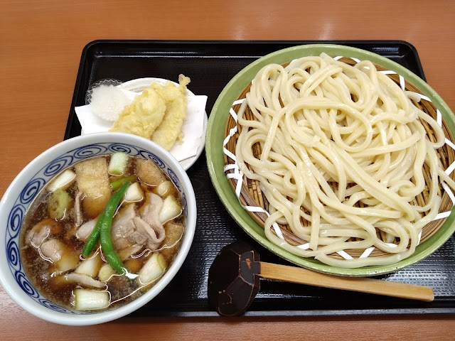
| 営業時間 | 月・火・水・木・金 11:00〜15:00, 17:00〜21:00 ／ 土・日 11:00〜21:00 |
|---|---|
| 定休日 | なし(要最終確認) |
| 住所 | 栃木県小山市城北６丁目１−４ |
| 予約 | 要確認 — ☎ 0285-25-0311 ／ 公式サイト |
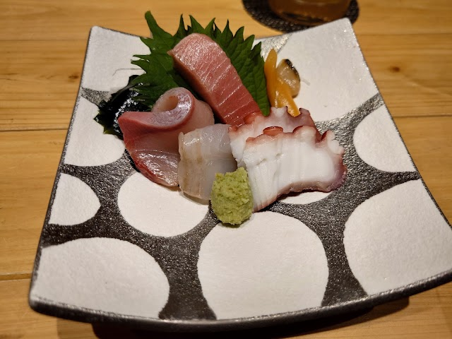
| 営業時間 | 月・火・水・木・金・土 17:00〜22:30 |
|---|---|
| 定休日 | 日曜 |
| 住所 | 栃木県小山市城東３丁目１７−１ |
| 予約 | 可 — ☎ 0285-37-6966 |
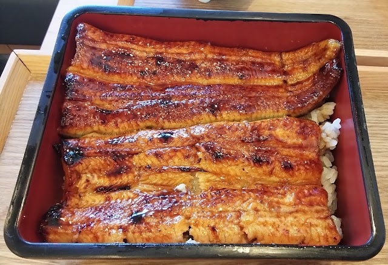
| 営業時間 | 月・火・水・木・金・土 11:30〜14:15, 17:30〜21:30 |
|---|---|
| 定休日 | 日曜 |
| 住所 | 栃木県小山市梁４２５−１４ |
| 予約 | 可 — ☎ 0296-45-5251 ／ 公式サイト |
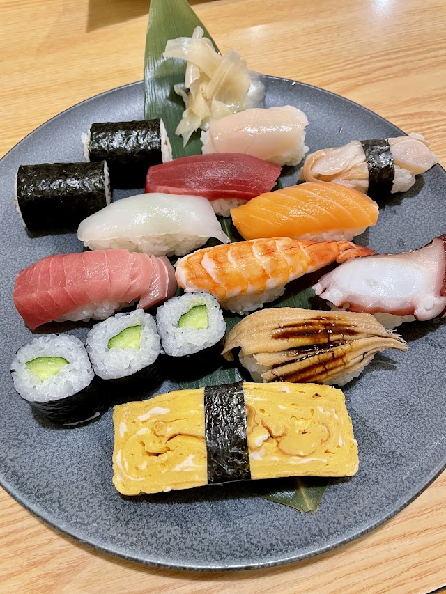
| 営業時間 | 月・火・金・土・日 11:00〜13:30, 17:00〜21:30 ／ 木 17:00〜21:30 |
|---|---|
| 定休日 | 水曜 |
| 住所 | 栃木県小山市乙女３丁目２０−１１ |
| 予約 | 可 — ☎ 0285-45-0790 ／ 公式サイト |
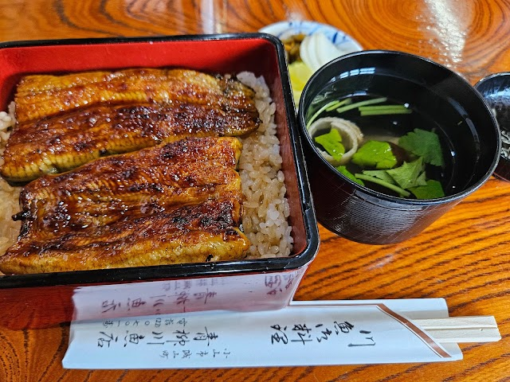
| 営業時間 | 月・火・木・金・土・日 11:00〜14:00, 17:00〜19:00 |
|---|---|
| 定休日 | 水曜 |
| 住所 | 栃木県小山市城山町１丁目２−１ |
| 予約 | 可 — ☎ 0285-22-0701 |
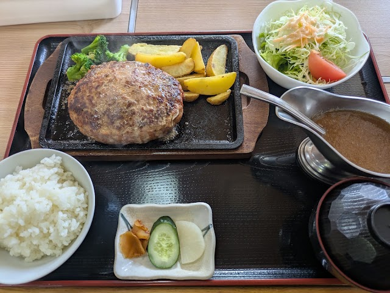
| 営業時間 | 火・水・木・金・土・日 11:00〜14:30, 17:00〜20:00 |
|---|---|
| 定休日 | 月曜 |
| 住所 | 栃木県小山市卒島２４２ |
| 予約 | 可 — ☎ 0285-22-2633 ／ 公式サイト |
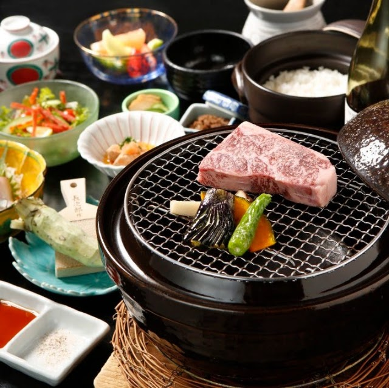
| 営業時間 | 水・木・金・土 11:00〜15:00, 17:00〜21:00 ／ 日 11:00〜15:00 |
|---|---|
| 定休日 | 月・火曜 |
| 住所 | 栃木県小山市喜沢８７−１ |
| 予約 | 可 — ☎ 0285-24-7211 ／ 公式サイト |
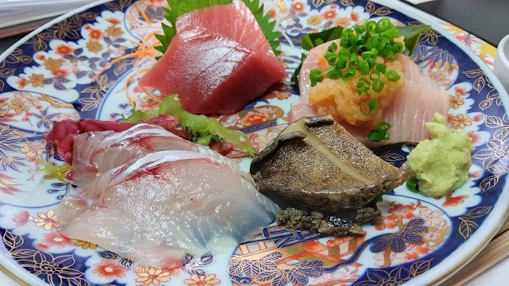
| 営業時間 | 月・火・水・木・金・土・日 11:30〜14:00, 17:00〜22:00 |
|---|---|
| 定休日 | なし(要最終確認) |
| 住所 | 栃木県小山市喜沢１８８ |
| 予約 | 可 — ☎ 0285-39-8056 |
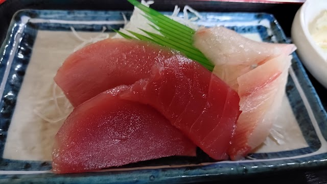
| 営業時間 | 火・水・木・金・土 11:30〜14:30 |
|---|---|
| 定休日 | 月・日曜 |
| 住所 | 栃木県小山市下石塚４７３ |
| 予約 | 可 — ☎ 0285-38-1211 ／ 公式サイト |
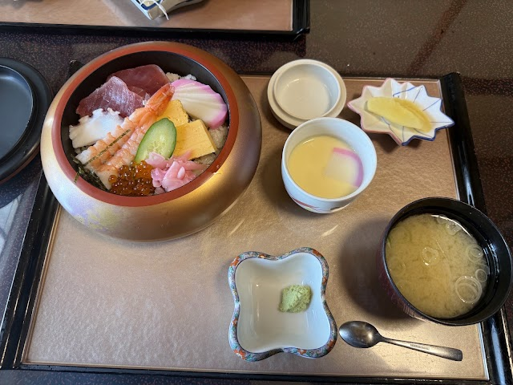
| 営業時間 | 月・火・木・金 11:30〜14:00 ／ 土・日 11:30〜14:00, 17:30〜21:30 |
|---|---|
| 定休日 | 水曜 |
| 住所 | 栃木県小山市下河原田１１１０ |
| 予約 | 可 — ☎ 0285-38-0073 |
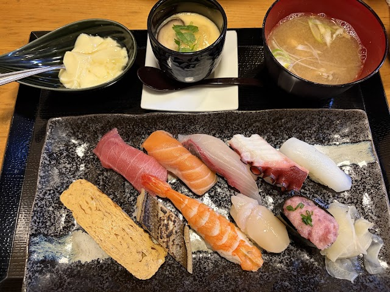
| 営業時間 | 月・火・水・木・金・土・日 11:00〜14:00, 17:00〜22:00 |
|---|---|
| 定休日 | なし(要最終確認) |
| 住所 | 栃木県小山市中央町３丁目６−９ |
| 予約 | 可 — ☎ 050-5486-2399 ／ 公式サイト |
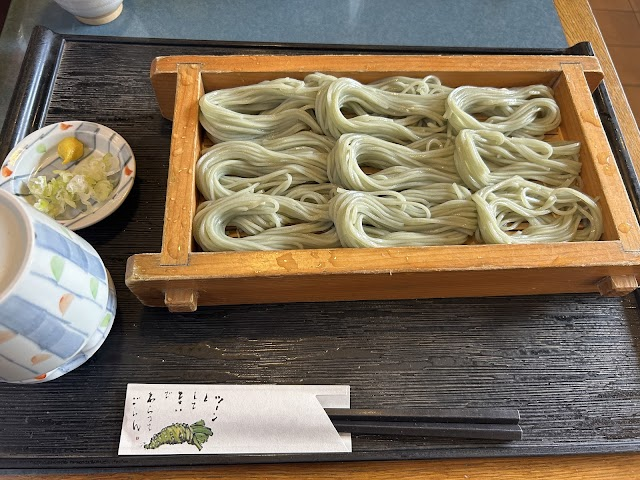
| 営業時間 | 月・水・木 10:45〜15:00 ／ 金・土・日 10:45〜15:00, 17:00〜20:00 |
|---|---|
| 定休日 | 火曜 |
| 住所 | 栃木県小山市間々田１１７５−１ |
| 予約 | 可 — ☎ 0285-45-1719 ／ 公式サイト |
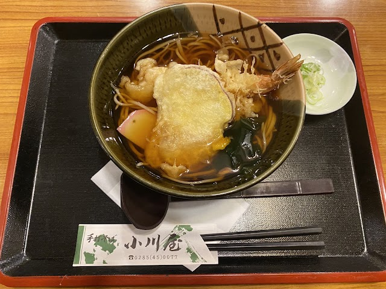
| 営業時間 | 月・火・水・木・金・土・日 11:00〜14:30, 17:00〜20:00 |
|---|---|
| 定休日 | なし(要最終確認) |
| 住所 | 栃木県小山市乙女２丁目２５−１６ |
| 予約 | 可 — ☎ 0285-45-0077 ／ 公式サイト |
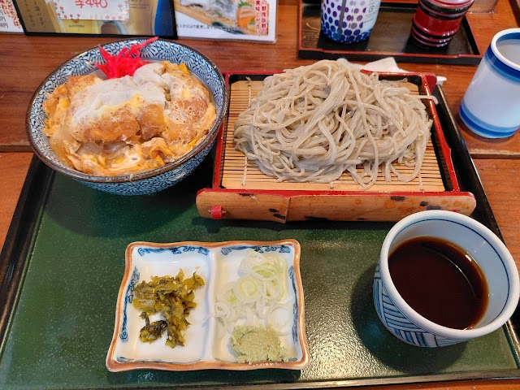
| 営業時間 | 月・火・木 11:00〜14:00, 17:00〜20:30 ／ 金 9:00〜20:30 ／ 土・日 11:00〜14:00, 17:00〜21:30 |
|---|---|
| 定休日 | 水曜 |
| 住所 | 栃木県小山市松沼６４２−３ |
| 予約 | 可 — ☎ 0285-37-2800 |
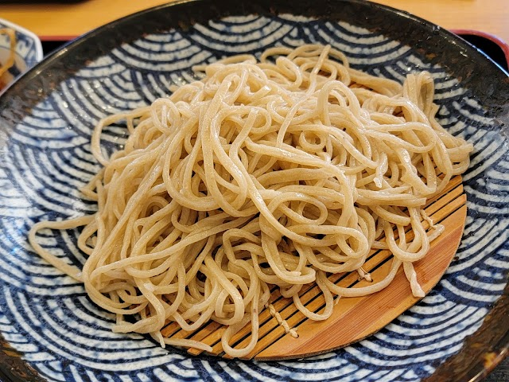
| 営業時間 | 月・火・水・金・土・日 11:00〜14:00, 17:00〜19:00 |
|---|---|
| 定休日 | 木曜 |
| 住所 | 栃木県小山市中央町２丁目７−２６ |
| 予約 | 可 — ☎ 0285-23-0620 |
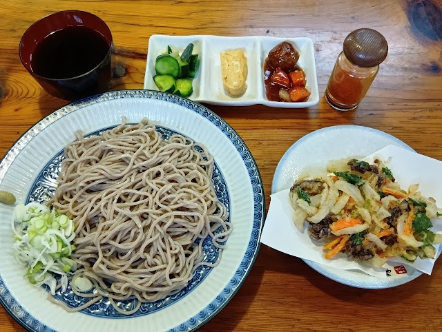
| 営業時間 | 月・火・水・木・金・土 12:00〜14:00, 18:00〜22:00 ／ 日 12:00〜14:00 |
|---|---|
| 定休日 | なし(要最終確認) |
| 住所 | 栃木県小山市城山町２丁目１１−１２ |
| 予約 | 要確認 — ☎ 0285-22-0262 |
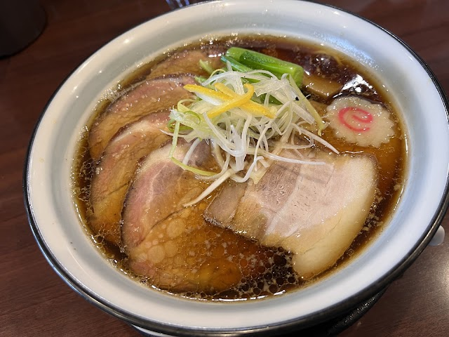
| 営業時間 | 水・木・金・土・日 11:00〜14:30 |
|---|---|
| 定休日 | 月・火曜 |
| 住所 | 栃木県小山市城東５丁目１０−１７ |
| 予約 | 要確認 — ☎ 0285-23-5621 ／ 公式サイト |
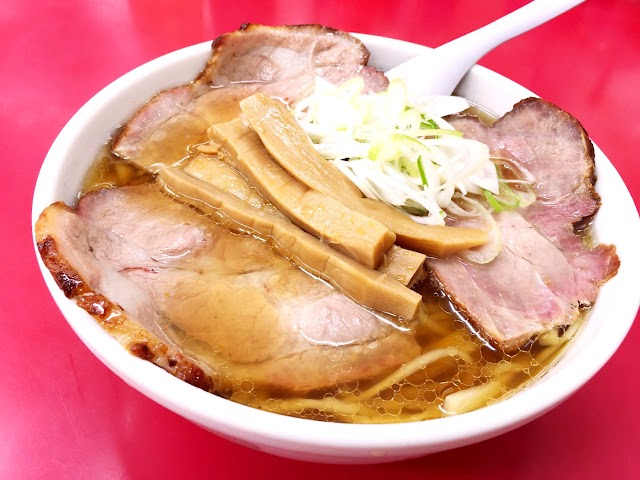
| 営業時間 | 月 11:30〜14:00, 17:00〜19:00 ／ 水・木・金 11:30〜14:00, 17:00〜19:30 ／ 土・日 11:30〜14:00, 17:00〜20:00 |
|---|---|
| 定休日 | 火曜 |
| 住所 | 栃木県小山市城東１丁目９−２９ |
| 予約 | 要確認 — ☎ 0285-24-1988 ／ 公式サイト |
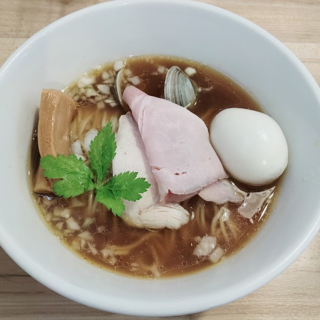
| 営業時間 | 月・火・金 11:30〜14:00, 18:00〜21:30 ／ 水 11:30〜14:30 ／ 土・日 11:30〜14:30, 18:00〜21:30 |
|---|---|
| 定休日 | 木曜 |
| 住所 | 栃木県小山市天神町２丁目３−５ |
| 予約 | 要確認 — ☎ 0285-39-7051 ／ 公式サイト |
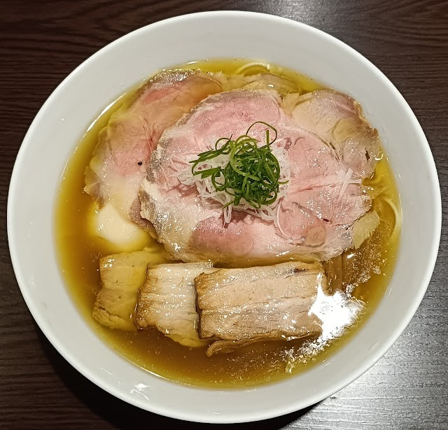
| 営業時間 | 月・火・木・金 11:00〜14:30, 18:00〜20:00 ／ 水・土 11:00〜14:30 |
|---|---|
| 定休日 | 日曜 |
| 住所 | 栃木県小山市駅南町４丁目２５−６ |
| 予約 | 要確認 — ☎ 0285-42-4280 ／ 公式サイト |
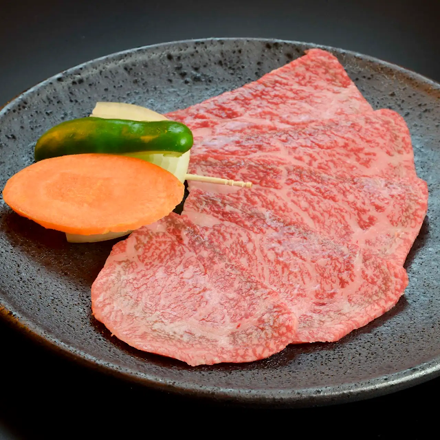
| 営業時間 | 月・水・木・金・土 17:30〜22:15 ／ 日 17:30〜22:00 |
|---|---|
| 定休日 | 火曜 |
| 住所 | 栃木県小山市城北５丁目3−１３ |
| 予約 | 可 — ☎ 050-5487-4170 ／ 公式サイト |
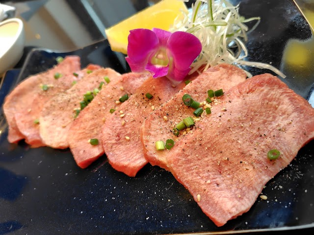
| 営業時間 | 火・水・木・日 17:30〜22:00 ／ 金・土 17:30〜22:30 |
|---|---|
| 定休日 | 月曜 |
| 住所 | 栃木県小山市駅東通り１丁目７−２３ |
| 予約 | 可 — ☎ 050-5488-1154 ／ 公式サイト |
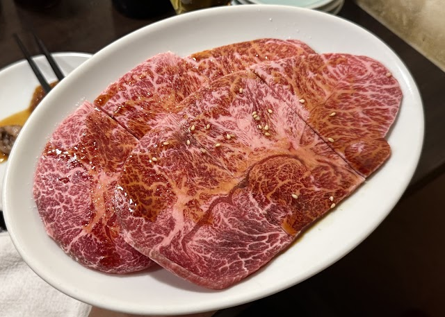
| 営業時間 | 月・水・木・金・土・日 17:00〜23:00 |
|---|---|
| 定休日 | 火曜 |
| 住所 | 栃木県小山市立木５９３−２ |
| 予約 | 可 — ☎ 0285-35-6627 ／ 公式サイト |
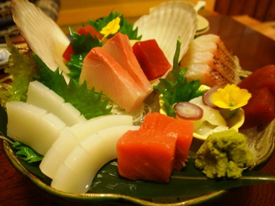
| 営業時間 | 月・火・水・金・土・日 17:30〜23:00 |
|---|---|
| 定休日 | 木曜 |
| 住所 | 栃木県小山市間々田１１３０ |
| 予約 | 可 — ☎ 0285-45-4998 |
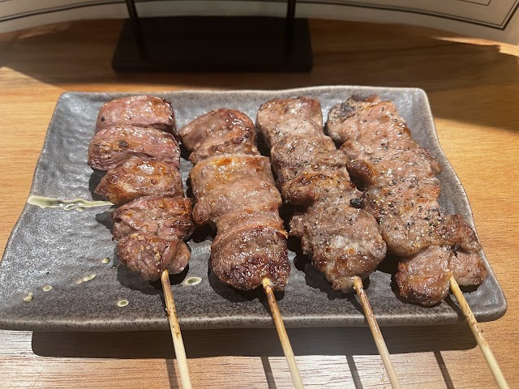
| 営業時間 | 月・火・水・木・金 17:00〜23:00 ／ 土・日 16:00〜23:00 |
|---|---|
| 定休日 | なし(要最終確認) |
| 住所 | 栃木県小山市中央町３丁目６−１０ |
| 予約 | 可 — ☎ 050-5489-6084 ／ 公式サイト |
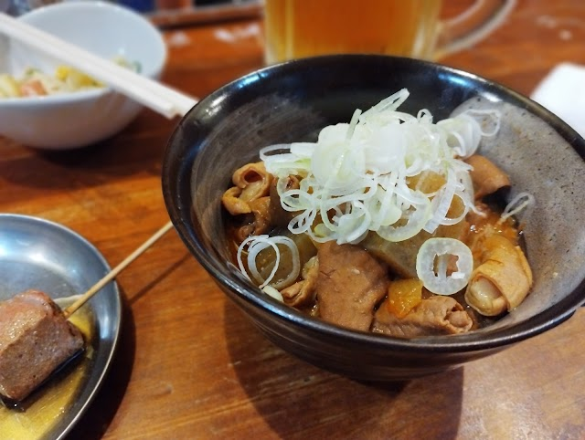
| 営業時間 | 月・火・水・金 17:00〜22:00 ／ 土 16:00〜22:00 ／ 日 15:00〜21:00 |
|---|---|
| 定休日 | 木曜 |
| 住所 | 栃木県小山市中央町３丁目６−７ |
| 予約 | 可 — ☎ 050-5485-5121 ／ 公式サイト |
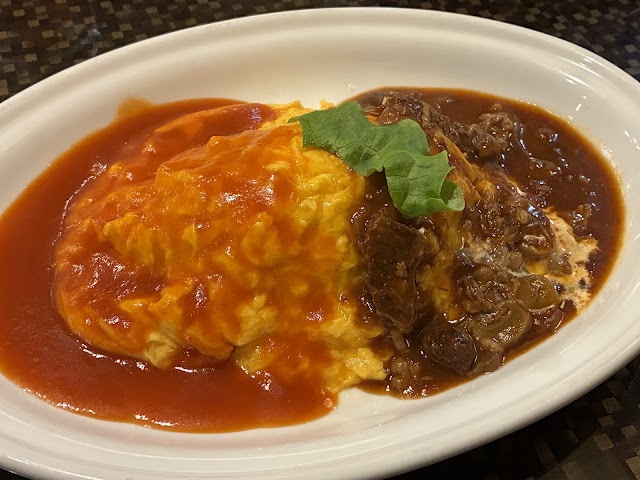
| 営業時間 | 火・水・木・金・土・日 11:30〜14:00, 18:00〜21:00 |
|---|---|
| 定休日 | 月曜 |
| 住所 | 栃木県小山市中央町３丁目１１−２７ 小嶋ビル 1F |
| 予約 | 可 — ☎ 0285-22-8986 ／ 公式サイト |
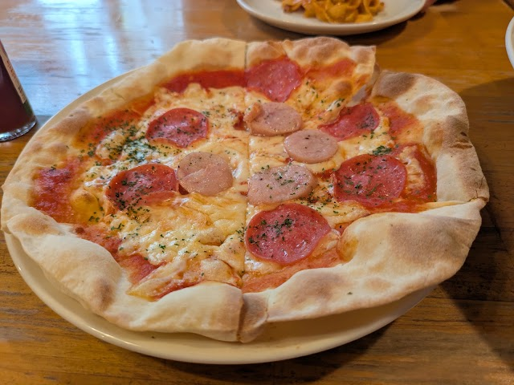
| 営業時間 | 月・水・木・金・土・日 11:00〜14:30, 17:30〜21:00 |
|---|---|
| 定休日 | 火曜 |
| 住所 | 栃木県小山市城山町３丁目９−２２ |
| 予約 | 可 — ☎ 0285-21-1881 ／ 公式サイト |
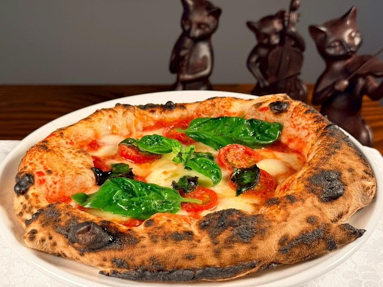
| 営業時間 | 水・木・金・土・日 12:00〜15:00, 17:30〜22:00 |
|---|---|
| 定休日 | 月・火曜 |
| 住所 | 栃木県小山市西城南１丁目11−３９ |
| 予約 | 可 — ☎ 050-8892-9354 ／ 公式サイト |
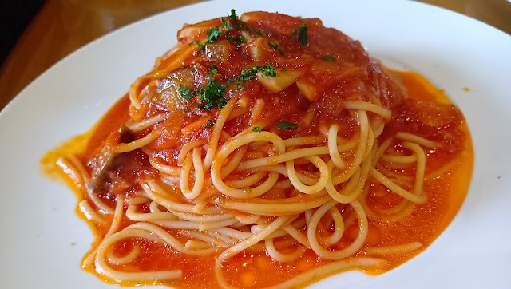
| 営業時間 | 火・水・金・土・日 11:00〜15:00, 17:30〜21:30 |
|---|---|
| 定休日 | 月・木曜 |
| 住所 | 栃木県小山市駅南町５丁目１３−２１ |
| 予約 | 可 — ☎ 050-5870-4931 |
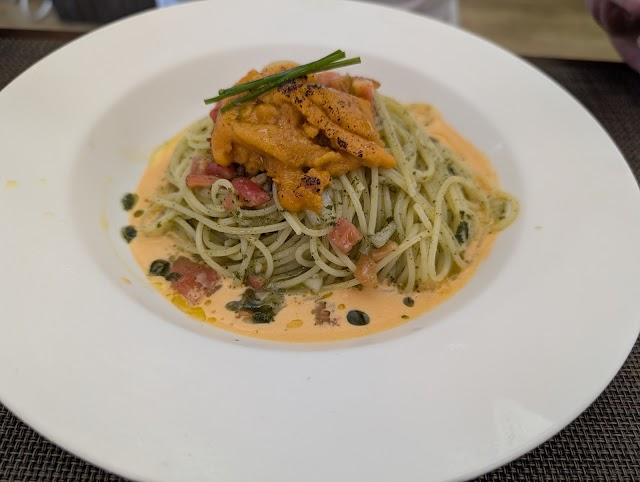
| 営業時間 | 火・水・木・金・土・日 11:00〜14:00, 17:30〜21:00 |
|---|---|
| 定休日 | 月曜 |
| 住所 | 栃木県小山市城東２丁目３１−２４ |
| 予約 | 可 — ☎ 0285-39-6575 ／ 公式サイト |
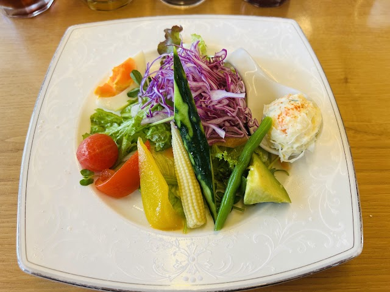
| 営業時間 | 火・水・木・金・土・日 11:00〜16:00 |
|---|---|
| 定休日 | 月曜 |
| 住所 | 栃木県小山市乙女６２５−２ |
| 予約 | 可 — ☎ 0285-39-6831 ／ 公式サイト |
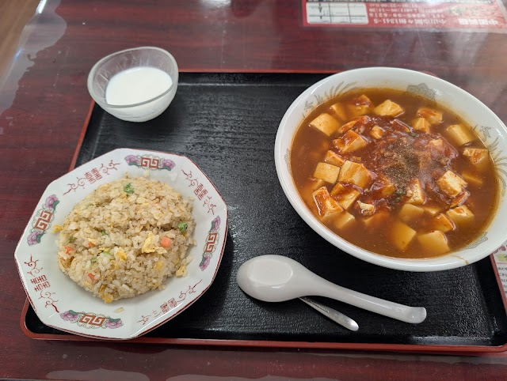
| 営業時間 | 月・火・水・木・金・土・日 11:00〜21:00 |
|---|---|
| 定休日 | なし(要最終確認) |
| 住所 | 栃木県小山市間々田１３４１−５ |
| 予約 | 可 — ☎ 0285-50-6276 |
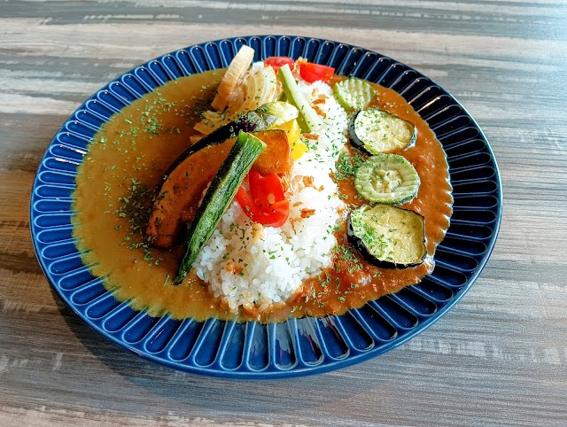
| 営業時間 | 月・水・木・金・土・日 11:00〜15:00, 17:00〜21:00 |
|---|---|
| 定休日 | 火曜 |
| 住所 | 栃木県小山市城北６丁目２６−１ メモリープラザ小山 101 |
| 予約 | 要確認 — ☎ 090-1705-3624 ／ 公式サイト |
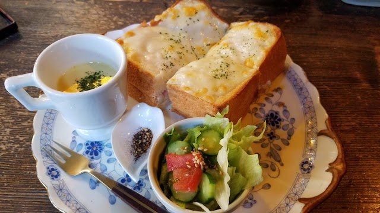
| 営業時間 | 月・火・水・金・土・日 10:30〜18:00 |
|---|---|
| 定休日 | 木曜 |
| 住所 | 栃木県小山市犬塚４丁目１０−１５ |
| 予約 | 可 — ☎ 0285-22-3988 ／ 公式サイト |
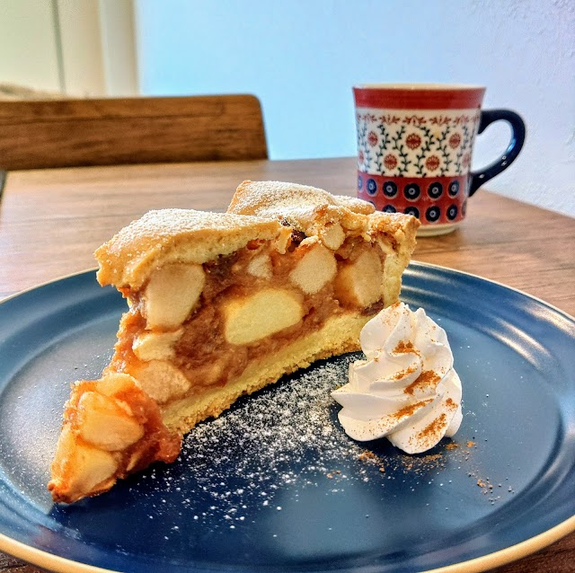
| 営業時間 | 火・水・木・金・土・日 14:00〜18:30 |
|---|---|
| 定休日 | 月曜 |
| 住所 | 栃木県小山市土塔２４７−６４ |
| 予約 | 要確認 — ☎ 080-1354-5398 ／ 公式サイト |
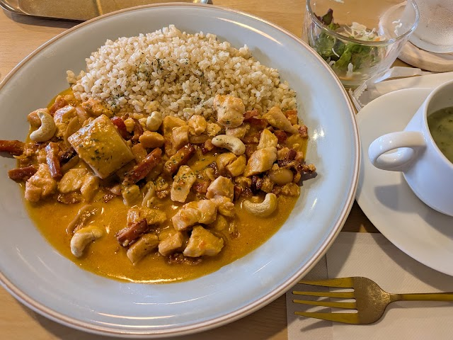
| 営業時間 | 月・木・金・土・日 11:00〜18:00 |
|---|---|
| 定休日 | 火・水曜 |
| 住所 | 栃木県小山市横倉４７１−３４ |
| 予約 | 可 — ☎ 0285-27-6214 ／ 公式サイト |
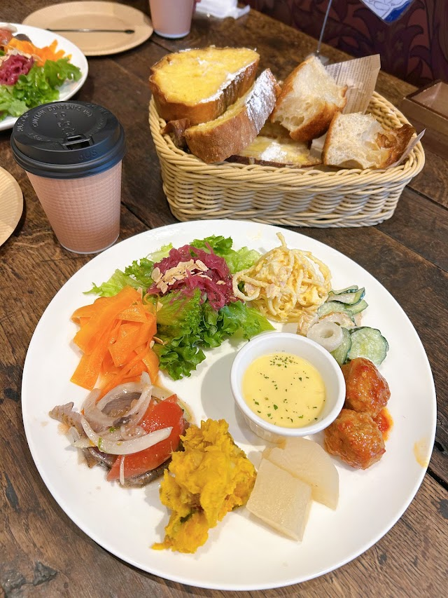
| 営業時間 | 月・木・金・土・日 8:30〜16:00 |
|---|---|
| 定休日 | 火・水曜 |
| 住所 | 栃木県小山市東城南１丁目３−２２ |
| 予約 | 要確認 — ☎ 0285-28-0202 ／ 公式サイト |
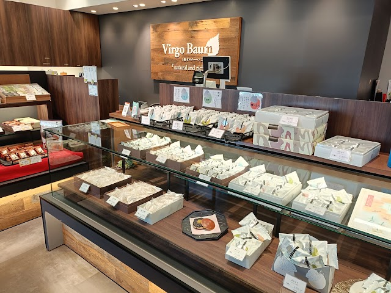
| 営業時間 | 月・火・水・木・金・土・日 9:00〜19:00 |
|---|---|
| 定休日 | なし(要最終確認) |
| 住所 | 栃木県小山市間々田１１５０ |
| 予約 | 要確認 — ☎ 0285-45-0127 ／ 公式サイト |
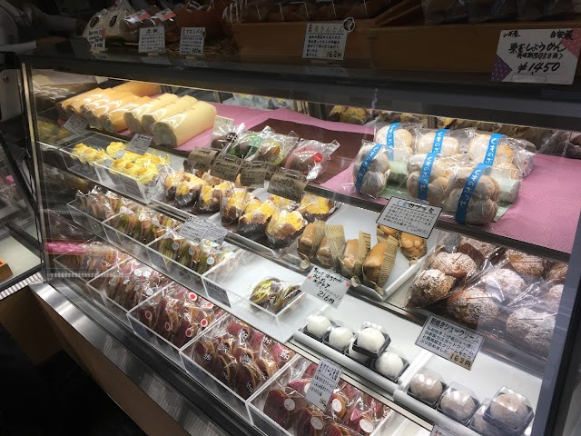
| 営業時間 | 火・水・木・金・土・日 8:00〜18:00 |
|---|---|
| 定休日 | 月曜 |
| 住所 | 栃木県小山市下石塚３５２−１ |
| 予約 | 要確認 — ☎ 0285-38-2011 |
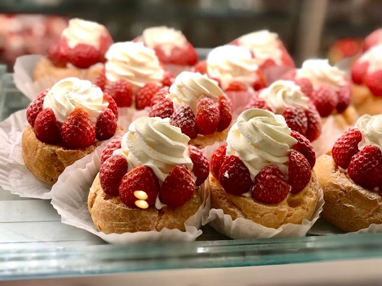
| 営業時間 | 月・火・水・木・金・土・日 9:00〜17:00 |
|---|---|
| 定休日 | なし(要最終確認) |
| 住所 | 栃木県小山市大川島４０８ |
| 予約 | 可 — ☎ 0285-33-1120 ／ 公式サイト |
本ガイドは個人利用目的で作成。掲載情報は2026年8月時点の調査に基づく。写真出典: Google Maps投稿写真(©各投稿者/Google)。